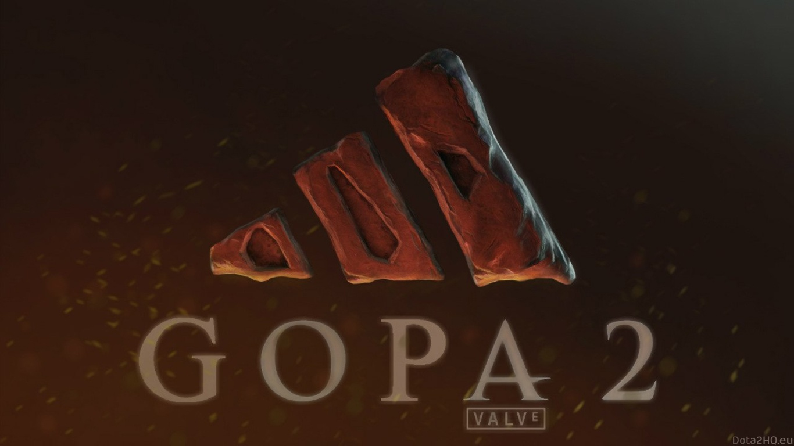

Гайд по доте
Dota 2 — компьютерная многопользовательская командная игра жанра стратегия в реальном времени с элементами компьютерной ролевой игры, реализация известной карты DotA для игры Warcraft III в отдельном клиенте. В игре участвуют две команды по пять человек. Одна команда играет за светлую сторону (англ. The Radiant), другая — за тёмную (англ. The Dire). Каждый игрок управляет одним юнитом, который называется героем. Герой может получать опыт для повышения своего уровня, зарабатывать золото, покупать и собирать предметы, которые усиливают его или дают дополнительные способности. Каждый игрок постоянно получает небольшое количество золота от своей базы, а также зарабатывает небольшие порции золота за убийство вражеских существ и большие — за убийство героев. Команды рассредотачиваются по линиям, на которых происходит борьба с вражескими героями и отрядами крипов (англ. creeps) под управлением компьютера, которые каждые полминуты появляются на базах команд. Цель игры — уничтожить главное здание на вражеской базе.